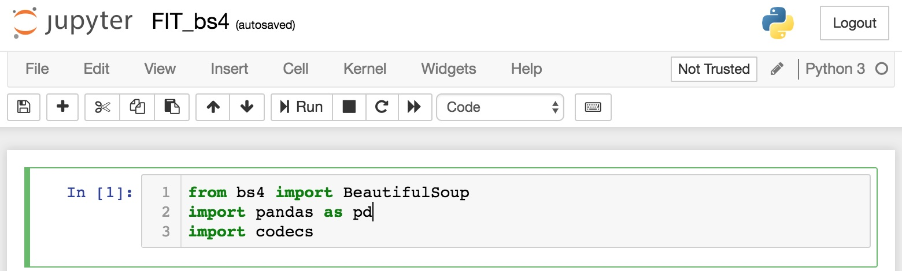
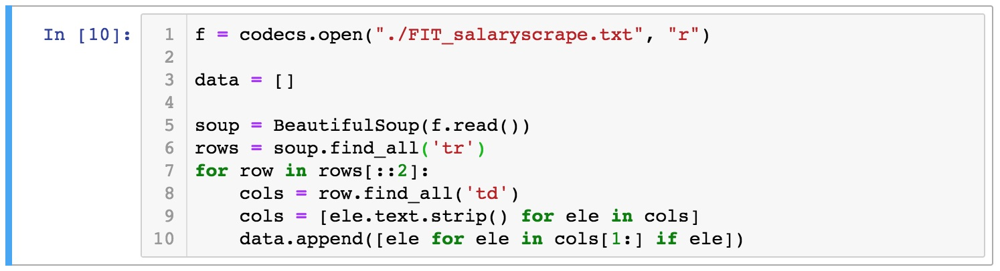
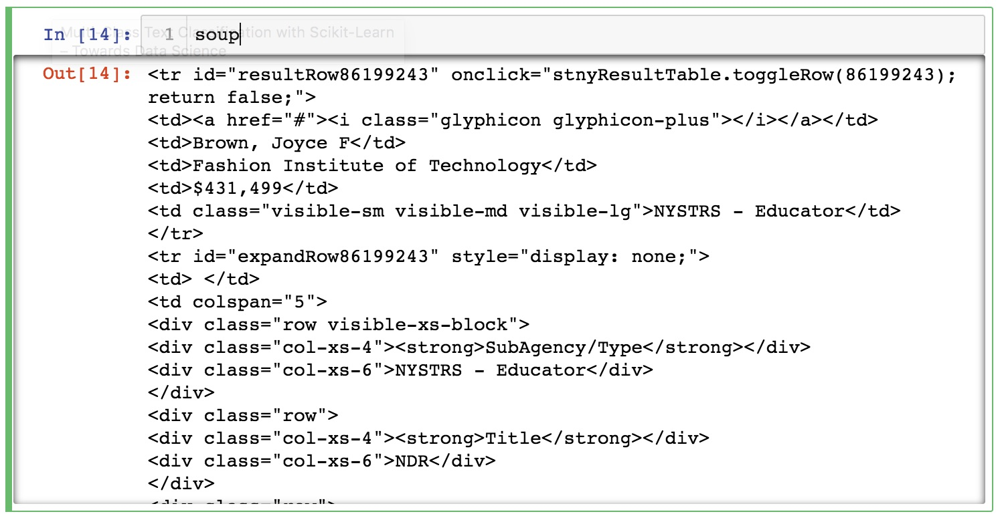
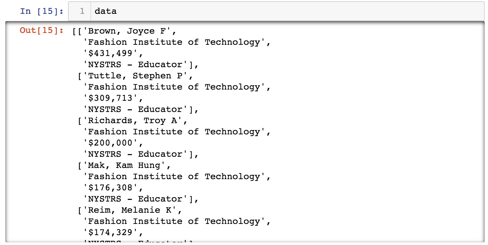
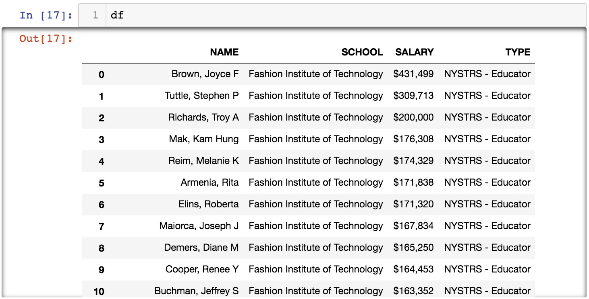

Project Description
In this workshop session you will learn to do a scrape data off an html doc, process the data by extracting all the data and eliminating all the html tags, and then do a fairly straight forward visualization. By the end of this session, you will learn to do something like this.
Step 1
Webscraping & Dataprocessing
Webscraping is a very powerful tool for data visualization especially if you’re interested in culturo-socio-polico-economic issues. This tool allows you to tap into vast amount of data from sometimes not so data friendly sources. In this example, we will look at salay levels of people who work in the New York Public Education System. By deploying the Freedom of Information Act, some organizations have requested and released data such as salary levels of all public employees across the country. This is an invaluable tool to demand accountability for people holding public offices. However, these dataset do not always come in a format that is easy to visualize. In our case, we will dive into a typical use case scenario and use the data released by the Empire Center, and look at salary levels of employees working in the CUNY system.
To start, the data cannot be downloaded with the click of a button. The data is not stored in any of the contemporary data formats like xml, json, or even csv. So to get the data, we’ll need to do some detective work and see how we can collect the information we want. First visit this website, seethroughny.net. Go to Menu > Payrolls > Schools, then under Filter > Employer / Agency, type in Fashion Institute of Technology. You can use the button below to directly link to the data, the actual data file is provided for you as well.
For direct link:
For data files:
We will cover how to use python to access web pages and webscrape with code at a different exercise. For now, I have already prepared and downloaded part of the html data for you so we can jump into data processing and visualization immediately.
If you have not done so already, download, unzip, and move the data file and place them into a new folder, I just created a folder named dataviz on my desktop. Then Launch Juputer Notebook by opening a Terminal or Anaconda Prompt, and type CD for “change directory”, and type in the path of the folder where your data file is stored.
cd /Users/tedngai/Desktop/dataviz
Then launch Jupyter Notebook by typing this, it will launch your web browser and should open the web app, and you should see Jupyter and your current folder location.
jupyter notebook
In Jupyter Notebook, click in the space at the first line right next to In [1], and type the following, once it’s done Hold SHIFT then press ENTER to execute the code.
from bs4 import BeautifulSoup
import pandas as pd
import codecs

Python is a very powerful programming language due to the fact that it has a large community of developers writing libraries to handle lower level programming, allowing you to concentrate on the big ideas.
There’re many libraries and packages out there that will handle different types of issues. And when ever you install libraries or packages from the opensource community, you will need to “import” them into the current system. And that’s what these first 3 lines of code is doing.
Next we will need to load the data file. Do that by typing the following and Hold SHIFT then press ENTER again to execute the code.
f = codecs.open("./FIT_salaryscrape.txt", "r")
What this line of code is doing is to store the whole text file into a single variable f. The “r” is to tell python that this is read-only. As mentioned before, this text file is basically a copy-paste html code from the webpage. What this means is it contains a lot of html code that needs to be processed. If you are not familiar with HTML code, look here for deep-dive into html code format and structure.
What we want to do is to separate html codes from data. Luckily the python library BeautifulSoup is built to do just that. Type in the following code and Hold SHIFT then press ENTER to execute.
data = []
soup = BeautifulSoup(f.read())
rows = soup.find_all('tr')
for row in rows[::2]:
cols = row.find_all('td')
cols = [ele.text.strip() for ele in cols]
data.append([ele for ele in cols[1:] if ele])

The first line of code here is to create an Empty List named data. Think of it as a bucket that can hold any length of data, and you need to declare it so python knows it before hand. In python, this is one of the very few data types that needs to be declared first. Second line is to call on BeautifulSoup to read the text file and in turn, assign that to the variable soup. In the next line, try typing in soup in the next line and execute it, you should see the HTML content. By looking at the html code, we can see that the data begins with a row of data that has an ID named resultRow, and the next row has an ID named exapndRow. resultRow has the information we need but expandRow contains mostly junk. This provide crucial information for how the data is structured and that it has a repetitive pattern.

HTML is basically a big mix of human readable language mixed with machine language, allowing for both human and machine to access the same information. Most of the machine language is contained within this <> bracket call Tags. There’re lots of common HTML tags, and the one that we see here is tr and td. tr represents Table / Row, and td represents Table / Data cell. Each row of data begins with the tag tr and end with the /tr tag. All the content contained inside a pair of tr tags is considered to be in the same row, like a row of data in an excel spreadsheet. As we can see here, there’re a bunch of td tags within the tr tags, a bunch of data cells inside a row. So if we look at the python code, BeautifulSoup is used to read the whole HTML text file, and then the function find_all is used to locate all the tr tags and they’re collected in a variable all ROWS. find_all creates a list of lists where each row of data is stored as an item in the list. For more information on lists, follow the link for a deep dive.
This following bit of code is about applying a programming logic to go through each row of data, then apply the same procedure repeatedly until some condition is met, and we will end up with a programming friendly dataset. for row in rows is a simple way that python goes through every single item in a big list of things and pick through each item. [::2] is python’s way to skip every other item, as we need to do here because every other row of html content is non-essential. For a deep-dive into python loop structures, click the following.
Now that we’re inside the for loop, we’ll identify all the td tags and then sort them into another list with the find_all function again. We then use the text.strip() function to get rid of all the machine language or tags so all that remains is human readable language.
Last but not least, the last line puts each row of data that has been processed into a variable, something I called a bucket earlier. You can see what the variable data looks like if you just execute the variable data. Type data and execute and you should see something like this.

As you can see, this data structure is a list of lists. It’s a list of every person with Names, School Affiliation, Salary Level, and NYSTRS Description, inside a list of all 377 people. Now it’s time to turn this list of lists into a Pandas dataframe to make visualization much easier. Think of Pandas as a very powerful Excel that can handle lists and tables very well. To do this we need to just give the data a HEADER, and then call a function to create a new variable. Execute the following code and then type df to show the variable.
labels = ['NAME', 'SCHOOL', 'SALARY', 'TYPE']
df = pd.DataFrame.from_records(data, columns=labels)

Now that you have turned an ordinary list of lists into a Pandas Dataframe, we will be able to use many of its powerful features to further process the data.
Step 2
Data Visualizaiton
We’re now ready to visualize the data. The table we have only has 4 columns of data, 2 of which repeats the same information over and over. So essentially, we only have names and salary to work with. For something like this, we can do a Box Plot that allow us to look at a 1-Dimensional data in an interesting way. For more graph types you can do with Plot.ly, click the following link.
For this next part we’ll need to bring in another python package. Plotly is a dynamic graphing package that lets you interact with data live. We will look at the basics of how to use it to graph what we have. So first import the packages by typing in the following.
```python import plotly.plotly as py import plotly.graph_objs as go from plotly.offline import download_plotlyjs, init_notebook_mode, iplot
init_notebook_mode(connected = True)
The first 3 lines of code is just to import the Plotly graphing packages. The 4th one is to allow plotly to plot directly inside Jupyter. Once you have executed the code, you can go ahead and input the following code.
```python
trace0 = go.Box(
name = "FIT",
y = df['SALARY'])
layout = go.Layout(
title = "FIT Faculty Salary")
data = [trace0]
iplot({"data":data,
"layout":layout})
If everything is running correctly, you should see a graph like this one. This is a 1 dimensional graph that gives you a bit of statistical calculation. It tells you what the median value is, what the lower and upper fence is, and what numbers are falling outside of the norm. How going back to the code, trace0 is defined to use Box graph and you assign the Y axis to only the SALARY column of the dataframe. For layout, we’re naming the graph FIT Faculty Salary. Data is needed to put trace0 in a square bracket. This step is necessary because if we want to plot more than 1 column of data, we can put multiple values here. Lastly, the iplot command sends the plot to jupyter.
You can download the jupyter file here and review the all the inputs here.
Alternate Visualizaiton
Although this visualization is very straightforward, you can improve it by showing the points data to understand the distribution a little better. To do this you just need to add 3 lines of code: boxpoints='all' to show all the points, jitter is to “spread” the points to a certain width, and pointpos is to move the position so it doesn’t overlap with the box itself.
python boxpoints='all', jitter=0.2, pointpos=-1.5
All together it would look something like this.
```python trace0 = go.Box( name = “FIT”, y = df[‘SALARY’], boxpoints=’all’, jitter=0.2, pointpos=-1.5)
layout = go.Layout( title = “FIT Faculty Salary”)
data = [trace0] iplot({“data”:data, “layout”:layout}) ```
Step 3
###Data Visualizaiton Challenge Let’s try to apply everything we’ve learn so far and apply it to a more challenging dataset. For this exercise, you will have to learn a few more Pandas commands on data processing. We will use the CUNY_salaryscrape.txt file that was downloaded earlier, here’s the link again.
Now before we begin this final challenge, let’s take a look at the file and try to understand what kind of strategy we need to unpack this. First, the text file itself is almost 50Mb, for a text file this is pretty big, which means we have to be a careful about memory management. And upon opening the file, you’ll find that there’re over 12 million lines of text inside. Although not all the lines are useful data, we’ll need to devise a way to efficiently extract only the useful information out.
Now let’s open up the file and look at the first 2 rows of data under the tr tag and try to see what we’re dealing with. The file opens with an html tag <tbody> followed by 1 <tr> tag and a bunch of <td> tags. This part of the file is exactly the same as the previous exercie. The <tr> tags have 2 different id types: 1 is the resultRow and the other is the expandRow, with resultRow showing the basic information and expandRow showing supplemental information. Unlike the previous example, we can’t just simply discard the expandRow, this means we will have to accomodate that with our code.
Also, the first row of data is separated into columns with the <td> tags whereas the second row is tag is separated <div> tags. So the 2 rows of data will have to be parsed differently.
<tbody><tr id="resultRow88275159" onclick="stnyResultTable.toggleRow(88275159); return false;">
<td><a href="#"><i class="glyphicon glyphicon-minus"></i></a></td>
<td>El Mohandes, Ayman</td>
<td>CUNY</td>
<td>$544,685</td>
<td class="visible-sm visible-md visible-lg">School of Public Health Lag</td>
</tr>
<tr id="expandRow88275159" style="">
<td> </td>
<td colspan="5">
<div class="row visible-xs-block">
<div class="col-xs-4"><strong>SubAgency/Type</strong></div>
<div class="col-xs-6">School of Public Health Lag</div>
</div>
<div class="row">
<div class="col-xs-4"><strong>Title</strong></div>
<div class="col-xs-6">Dean School Of Public Health</div>
</div>
<div class="row">
<div class="col-xs-4"><strong>Rate of Pay</strong></div>
<div class="col-xs-6">$443,000</div>
</div>
<div class="row">
<div class="col-xs-4"><strong>Pay Year</strong></div>
<div class="col-xs-6">2018</div>
</div>
<div class="row">
<div class="col-xs-4"><strong>Pay Basis</strong></div>
<div class="col-xs-6">Annual</div>
</div>
<div class="row">
<div class="col-xs-4"><strong>Branch/Major Category</strong></div>
<div class="col-xs-6">State - Executive</div>
</div>
</td>
Ok so let’s just dive right into this. First, again, import all the packages we need by executing the following code.
```python from bs4 import BeautifulSoup import pandas as pd from collections import defaultdict import plotly.plotly as py import plotly.graph_objs as go from plotly.offline import download_plotlyjs, init_notebook_mode, iplot import codecs
init_notebook_mode(connected = True) ```
Next, read the data file and use BeautifulSoup to sort all the rows of data into a list of lists.
python f = codecs.open("./CUNY_salaryscrape.txt", "r") soup = BeautifulSoup(f.read()) rows = soup.find_all('tr')
Same as before, the following code is to go through each row of data and extract all the <td> tags and put them in the right place. However, as mentioned before, the data is structured differently this time, so all the extra code here is to deal with the alternating rows and the different data tags used.
Not to get too much into the technical detail, but the idea is to use 2 buckets, 1 to hold data for very 2 rows of data, which will then be dumped into the other bucket, and then empty itself out. So this is a way to get around the quirkiness data structure that was provided.
```python data = [] temp = [] i = 0
def flatten(temp): return [item for sublist in temp for item in sublist]
for row in rows: cols = row.find_all(‘td’) cols = [ele.text.strip() for ele in cols] temp.append(cols[1:]) i += 1 if i%2 == 0: templist= temp[1][0].split(‘ ‘) temp[1]=templist flattemp = flatten(temp) data.append([ele for ele in flattemp if ele]) temp = [] ```
Now that we have a list of lists with all the useful data in it, it’s time to turn them into a Pandas dataframe for further processing.
```python labels = [‘NAME’, ‘SCHOOL’, ‘SALARY’, ‘DEPARTMENT’, ‘SUBAGENCY TYPE’,’SUBAGENCY’,’TITLE TYPE’,’TITLE’,’RATEOFPAY TYPE’, ‘RATE OF PAY’,’PAYYEAR TYPE’, ‘PAY YEAR’, ‘PAYBASIS TYPE’, ‘PAY BASIS’,’BRANCH TYPE’, ‘BRANCH’]
df = pd.DataFrame.from_records(data, columns=labels) ```
Since the 2nd row of data contains a lot of “junk” data we will need to eliminate some of the columns of data that was just created. We’re doing it this way instead of parsing it out during the input phase because it’s a lot easier to remove columns with Pandas than to use logic to filter out unwanted data.
```python df = df.drop([‘SUBAGENCY TYPE’,’TITLE TYPE’, ‘RATEOFPAY TYPE’,’SUBAGENCY’, ‘PAYYEAR TYPE’, ‘PAY YEAR’,’PAYBASIS TYPE’, ‘BRANCH TYPE’,’BRANCH’],axis=1)
If everything is going smoothly up to this point, you should see something like this when you type in `df`
{:height="75%" width="75%"}
Now that we have the whole dataset with 34,000 rows of data, we can see we have actually more than 1 dimension to work with. So for this exercise, let's filter the amount of data down. If you see the **DEPARTMENT** column, this dataset includes employees in the whole **CUNY** system. So let's starts with singling out a specific college and concentrate on that. In our case, we'll only look at people who work at the **City College**. To do this we need to figure out how many different **DEPARTMENTS** there are. You can do this in many different ways but a powerful and pythonic way is to write a function. This following is an example to list all the duplicates and in which record the duplicate appears. For now, we're not going to go into the details so we'll just assume this is a button in a computer software you can press and it'll get you what you need.
```python def list_duplicates(seq):
tally = defaultdict(list)
for i, item in enumerate(seq):
tally[item].append(i)
return((key,locs) for key, locs in tally.items() if len(locs)>0) ```
Now that the function to find duplicate is in place, we can call the function with the following code. Essentially we're setting an empty bucket called departments, and all the variations will be collected into that variable. And if you execute the code successfully, you should see something like the following.
```python departments = []
for dup in sorted(list_duplicates(df['DEPARTMENT'])):
departments.append(dup[0]) ```
{:height="75%" width="75%"}
As you can see, **City College** is named in different ways like **City College**, **City College Adjunct**, **City College EH**, **City College Hourly**...etc. The code we'll use to extract that will need to be able to catch all the variations. Luckily Pandas lets us do this very easily. In this case, a new variable named **df_cc** is used to catch all the data that contains the word **City College** in it.
```python df_cc = df[df['DEPARTMENT'].str.contains('City College')]
Now that we have singled out only employees working at the City College, we want to look at the different positions people take and compare their salary levels. And let’s assume this time that we’re only intereste in people who are in teaching positions not administrative. Execute the following code and we’ll have a new variable named df_cc_prof with data that only has Prof and Lect in the data.
```python titles = [] for dup in sorted(list_duplicates(df_cc_prof[‘TITLE’])): titles.append(dup[0])
searchfor = [‘Prof’, ‘Lect’] df_cc_prof = df_cc[df_cc[‘TITLE’].str.contains(‘|’.join(searchfor))] ```
Lastly, we use Plotly again to visualize the data.
```python y0 = df_cc_prof[df_cc_prof[‘TITLE’] == ‘Professor’][‘SALARY’] y1 = df_cc_prof[df_cc_prof[‘TITLE’] == ‘Assoc Professor’][‘SALARY’] y2 = df_cc_prof[df_cc_prof[‘TITLE’] == ‘Asst Professor’][‘SALARY’] y3 = df_cc_prof[df_cc_prof[‘TITLE’] == ‘Adjunct Assoc Profess’][‘SALARY’] y4 = df_cc_prof[df_cc_prof[‘TITLE’] == ‘Adjunct Asst Professo’][‘SALARY’] y5 = df_cc_prof[df_cc_prof[‘TITLE’] == ‘Adjunct Professor’][‘SALARY’] y6 = df_cc_prof[df_cc_prof[‘TITLE’] == ‘Visiting Prof’][‘SALARY’] y7 = df_cc_prof[df_cc_prof[‘TITLE’] == ‘Visiting Assoc Profes’][‘SALARY’] y8 = df_cc_prof[df_cc_prof[‘TITLE’] == ‘Visiting Asst Profess’][‘SALARY’] y9 = df_cc_prof[df_cc_prof[‘TITLE’] == ‘Lecturer’][‘SALARY’] y10 = df_cc_prof[df_cc_prof[‘TITLE’] == ‘Clinical Professor’][‘SALARY’] y11 = df_cc_prof[df_cc_prof[‘TITLE’] == ‘Research Professor’][‘SALARY’]
trace0 = go.Box( name = “Professor”, y = y0, boxpoints=’all’, jitter=0.3, pointpos=-1.8)
trace1 = go.Box( name = “Assoc Professor”, y = y1, boxpoints=’all’, jitter=0.3, pointpos=-1.8)
trace2 = go.Box( name = “Asst Professor”, y = y2, boxpoints=’all’, jitter=0.3, pointpos=-1.8)
trace3 = go.Box( name = “Adjunct Assoc Profess”, y = y3, boxpoints=’all’, jitter=0.3, pointpos=-1.8)
trace4 = go.Box( name = “Adjunct Asst Professo”, y = y4, boxpoints=’all’, jitter=0.3, pointpos=-1.8)
trace5 = go.Box( name = “Adjunct Professor”, y = y5, boxpoints=’all’, jitter=0.3, pointpos=-1.8)
trace6 = go.Box( name = “Visiting Prof”, y = y6, boxpoints=’all’, jitter=0.3, pointpos=-1.8)
trace7 = go.Box( name = “Visiting Assoc Profes”, y = y7, boxpoints=’all’, jitter=0.3, pointpos=-1.8)
trace8 = go.Box( name = “Visiting Asst Profess”, y = y8, boxpoints=’all’, jitter=0.3, pointpos=-1.8)
trace9 = go.Box( name = “Lecturer”, y = y9, boxpoints=’all’, jitter=0.3, pointpos=-1.8)
trace10 = go.Box( name = “Clinical Professor”, y = y10, boxpoints=’all’, jitter=0.3, pointpos=-1.8)
trace11 = go.Box( name = “Research Professor”, y = y11, boxpoints=’all’, jitter=0.3, pointpos=-1.8)
layout = go.Layout( title = “City College Faculty Salary”)
data = [trace0, trace1, trace2, trace3, trace4, trace5, trace6, trace7, trace8, trace9, trace10, trace11] iplot({“data”:data, “layout”:layout }) ```
Summary
What You have Learned
- How to create and assign value to a variable
- How to create and assign values a list
- How to create and assign values a list of lists
- How to bring data into Python as text or csv files
- How to create and use a counter
- How to write a basic function
- How to call a basic function
- Basic loop structure - how to use for-loops
- How to import packages in Python
- How to use basic functions of packages like Pandas, Plotly, BeautifulSoup
- How to create interactive plots with Plotly.